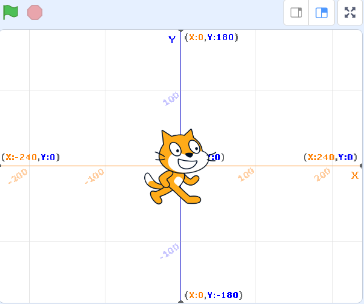

Ha llegado un momento muy importante: programar instrucciones para que los objetos tengan movimiento.
Ya has descubierto que los bloques encargados de ello son los de color azul, pero todos no tienen la misma función.
Atiende a Scratch para que te quede todo más claro.
1. Scratch te enseña a mover los objetos
¡Hola de nuevo! Presta atención y muévete conmigo, nos divertiremos. Por defecto, todos los proyectos nuevos en Scratch se cargan con un único objeto, el gato de Scratch. Puedes utilizarlo, borrarlo, añadir otros, etc. Por otro lado, es importante que sepas que cada objeto tiene su propio código, también llamado programa y que son las instrucciones que harán que el objeto cobre vida. Asegúrate de que el objeto que quieres programar está seleccionado con el borde en azul. Y...¡¡¡manos a la obra!!!
Mover
Uno de los bloques más utilizados es el de mover un número determinado de pasos en la dirección en la que está el objeto. En el espacio en blanco de en medio podemos cambiar el número de pasos haciendo clic dentro.
Ir a x ( ) y ( )
Este bloque nos va a servir para saber las coordenadas en el plano de un objeto. Las coordenadas nos sirven para saber la posición en el alto y ancho de un objeto en un plano de dos dimensiones.
El escenario de Scratch tiene un tamaño de 480 x 360píxeles. Para movernos en el plano izquierda a derecha modificaremos los valores de "x" y si queremos desplazarnos de arriba y abajo cambiaremos los valores de "y". El gato estaría ahora mismo en la coordenada x = 0 | y = 0.

Para desplazarnos desde el centro del escenario hacia la izquierda, los números en “x” serán valores negativos hasta un máximo de -240; para desplazarnos desde el centro hacia la derecha tomaría valores positivos hasta la el máximo de 240. Si queremos desplazarnos desde el centro hacia abajo la “y” tomaría valores negativos hasta -180; y para desplazarnos desde el centro hacia arriba tomaría valores positivos hasta la coordenada 180.
Deslizar
Si lo que quieres es que se desplace el objeto hasta una determinada posición identificada con unas coordenadas, utiliza el bloque deslizar. El objeto se desplazará durante el tiempo indicado a la posición especificada en las coordenadas, mostrando ese deslizamiento.
Girar
Para girar hacia la derecha el objeto un número determinado de grados desde la posición y dirección en la que está utiliza el bloque girara la derecha. Cada vez que hagas clic en el bloque volverá a girar esos mismos grados.
Si la instrucción que quieres dar es girar a la izquierda haz lo mismo, pero utilizando el bloque girar a la izquierda.
Apuntar en dirección
Por último si lo que deseas es que el objeto apunte a una dirección concreta independientemente de la posición y dirección en la que esté, emplea el bloque apunta en dirección.
Vídeo ejemplo
2. ¿Nos movemos?
Aplica lo que has aprendido utilizando los bloques de movimiento.
Puedes elegir la opción en la que te sientas mejor, pero te aconsejo que intentes hacer todas las que puedas.
OPCIÓN A: Programa con instrucciones sencillas
Programa el movimiento de un solo objeto. Puede ser el gato, que viene ya por defecto u otro que hayas insertado en tu proyecto.
Dale las instrucciones necesarias para que se inicie al hacer clic en bandera verde y se desplace un número de pasos, gire 90º y que este movimiento se repita un número de veces. Piensa que bloques tienes que utilizar además de los de movimiento.
Lumen dice ¿Necesitas ayuda?
Si después de revisar, todavía falla algo, aquí tienes el ejercicio resuelto:
OPCIÓN B: Muévete más
Programa el movimiento de un solo objeto.
Dale las instrucciones necesarias para que se inicie al pulsar una tecla siempre realice estas acciones:
Apuntar en dirección 60 Ir a las coordenadas x:64 y:40 Esperar 2 segundos Ir a una posición con un valor que incremente en 20 a cada coordenada.
Lumen dice ¿Ha funcionado bien tu programa?
Si no ha sido así, aquí tienes un ejemplo:
OPCIÓN C: Me encanta moverme
Programa la siguiente escena:
La acción se iniciará al hacer clic en bandera verde. Tu objeto estará situado en el borde inferior izquierdo y realizará los siguientes movimientos:
Irá al centro del escenario.
Dará unos pequeños saltitos.
Se deslizará hasta una posición en la que toque el borde derecho.
Rotará en sentido contrario.
Se deslizará de nuevo al centro del escenario.
Dirá ¡Hola! durante 2 segundos.
Haz clic en bandera verde y comprueba si tu programa funciona correctamente.
Lumen dice ¿Cómo te ha ido?
Haz clic en bandera verde y comprueba si tu programa funciona correctamente.
¿Tu objeto no ha seguido del todo tus instrucciones?
Puedes ver el siguiente proyecto y ver la programación, Ya sabes, pulsa en ver dentro.
 Ha llegado un momento muy importante: programar instrucciones para que los objetos tengan movimiento.
Ha llegado un momento muy importante: programar instrucciones para que los objetos tengan movimiento.  ¡Hola de nuevo! Presta atención y muévete conmigo, nos divertiremos. Por defecto, todos los proyectos nuevos en Scratch se cargan con un único objeto, el gato de Scratch. Puedes utilizarlo, borrarlo, añadir otros, etc.
¡Hola de nuevo! Presta atención y muévete conmigo, nos divertiremos. Por defecto, todos los proyectos nuevos en Scratch se cargan con un único objeto, el gato de Scratch. Puedes utilizarlo, borrarlo, añadir otros, etc.